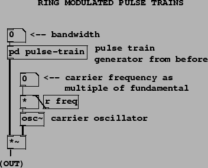
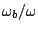
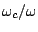
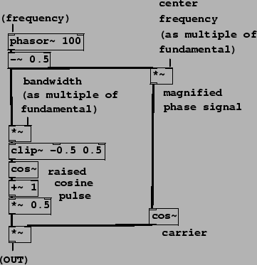

The next three examples demonstrate the sound of the varying pulse width, graph its spectrum, and contrast the waveshaping pulse generator. Skipping to Example F05.ring.modulation.pd (Figure 6.15), we show the simplest way of combining the pulse generator with a ring modulating oscillator to make a formant. The pulse train from the previous example is contained in the pd pulse-train subpatch. It is multiplied by an oscillator whose frequency is controlled as a multiple of the fundamental frequency. If the multiple is an integer, a harmonic sound results. No attempt is made to control the relative phases of the components of the pulse train and of the carrier sinusoid.
|  |
The next example, F06.packets.pd (Figure 6.16), shows how to combine the stretched wavetable pulse train with a sampled sinusoid to realize movable formants, as described in Section 6.3. The pulse generator is as before, but now the carrier signal is a broken sinusoid. Since its phase is the fundamental phase times the center frequency quotient, the sample-to-sample phase increment is the same as for a sinusoid at the center frequency. However, when the phase wraps around, the carrier phase jumps to a different place in the cycle, as was illustrated in Figure 6.7. Although the bandwidth quotient  must be at least one, the center frequency quotient  may be as low as zero if desired.
|  |